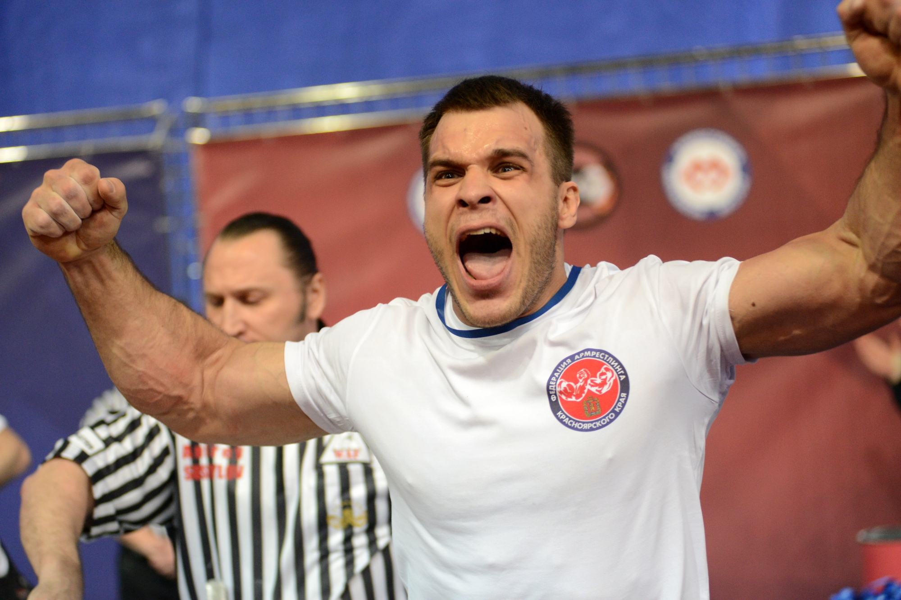
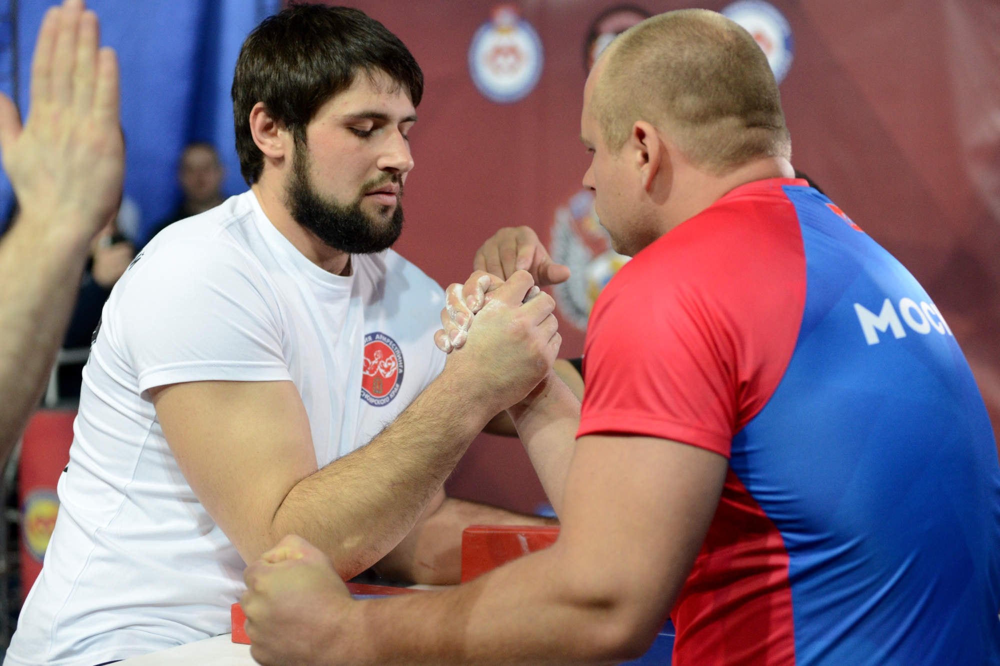
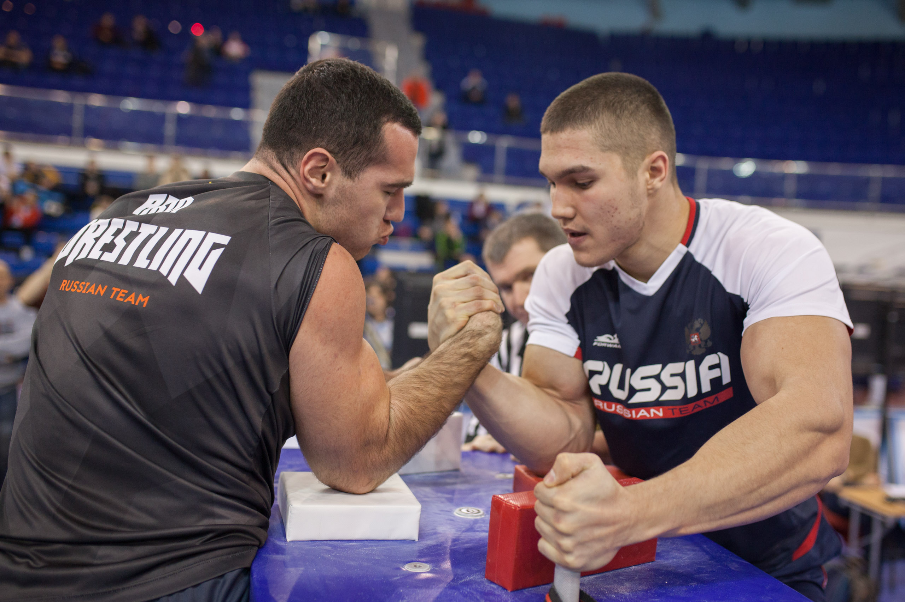

История армрестлинга
Можно считать, что армрестлинг существовал всегда, но как вид спорта он начал свои первые шаги в 1962 году. Его возникновение связывают с небольшим американским городком Паталумой неподалеку от крупного города США Сан-Франциско. По традиции в те времена по вечерам мужчины, которых Бог не обидел силой, собирались в одном из кабачков. На столах, где стояли рядом недопитые стаканчики с виски или бренди, крутые мужики боролись на руках. Среди борцов на руках были свои победители, которые, естественно, пользовались большой популярностью. Все это привело журналиста Билла Собераниса к мысли организовать настоящее соревнование по борьбе на руках. Его идея оказалась правильной, соревнования обрели статус чемпионатов Мира, а Биллу в знак благодарности спортсмены поставили бронзовый памятник в Паталуме. На месте исторического кабачка стоит теперь громадный спортивный комплекс - прибежище мастеров борьбы на руках.
Сам Билл Соберанис возглавил Всемирную корпорацию армрестлинга. Сейчас армрестлинг культивируется почти в 80 странах. В мире кроме корпорации армрестлинга существуют еще ассоциация и федерация армрестлинга. Это служит препятствием в признании МОК армрестлинга: Олимпийский комитет хочет иметь дело только с одной организацией, которая представляла бы всех спортсменов. Две другие федерации армрестлинга возглавляют также американцы, причем федерация объединяет спортсменов более чем из 60 стран мира. Кстати, для олимпийского статуса летнего вида спорта нужно, чтобы он культивировался в 75 странах и не менее, чем на 4-х континентах. При бурно растущем интересе и популярности армрестлинга - это вопрос близкого будущего. Но все эти федерации, проводя соревнования, не делят никого на "своих" и "чужих", поэтому сами атлеты от межевания не очень страдают.
Можно смело сказать, что армрестлинг становится все популярнее. Наряду с чемпионатами Мира и Европы проводится множество крупных турниров с солидным призовым фондом. Это "Юкан джак" в Нью-Йорке, турниры в Токио, Венесуэле, Канаде. Большую работу проводит Европейская федерация во главе с президентом Игорем Геннадьевичем Ахмедшиным, который также является президентом Российской ассоциации армрестлинга. Великолепная организация и проведение в Москве турнира "Золотой медведь" - еще одно тому подтверждение. Как грибы после дождя в последние годы появились международные турниры в Англии, Швейцарии, Болгарии, Бельгии и Словакии. Такого уровня соревнования рукоборцев проходят и в странах СНГ: это турниры на Украине, в Литве, в Татарстане и в Беларуси - "Беловежский зубр".
Все любители армрестлинга надеются на соединение трех федераций в единую Всемирную федерацию армрестлинга. Все официальные представители стран поддерживают эту идею. Надеемся, что вопрос этот будет решен. Будет выработана совместная единая стратегия, намечен план действий в МОК для достижения поставленных целей, и верится, что в скором времени мы увидим этот увлекательный и прекрасный вид спорта на Олимпийских играх.


Травматизм
Армрестлинг травмы получаются в основном из-за неопытности спортсменов. Зачастую самые серьезные побои происходят в дворовом армспорте, получаемые за счет большой рывковой нагрузки. Пострадавшие вовремя не обращаются за помощью к специалисту и даже продолжают бороться с болью. Определенно нужно различать большую мышечную и боль хрящевую или «сигнальную», которая предупреждает о риске перелома или травмирования.
Признаки травмирования
игнальная боль чаще всего возникает в плече и в покрывающих его скелетных мышцах. Именно эти области подвергаются наибольшей нагрузке при рывковых движениях, так как плечевой сустав имеет высокую подвижность и малую стабильность. При регулярных и правильных тренировках, а также некоторых генетических особенностях, травмирование маловероятно.
Резкая боль в глубине плеча при минимальной нагрузке является основным признаком армрестлинг травмы плечевого сустава. В случае травмы в армрестлинге плечевого сустава и скелетных мышц этой области в срочном порядке нужно обратиться к врачам и не заниматься самолечением.
Реабилитация
Если вы уже получили травмирование конечности, вам оказали помощь и прошел некоторый период времени в течение которого вам было нельзя напрягать руку, наступает процесс восстановления. Для его реализации используют различные комплексы упражнений с использованием жгута. Программа реабилитации направлена на то, чтобы укрепить травмированную часть – восстановить ткани, соединяющие связки и кости. После некоторого периода реабилитации, прорабатываются упражнения, развивающие скорость и силу.
Составить программу реабилитации для себя может каждый спортсмен. Но необходимо разделить этот процесс на 4 фазы. В первой фазе упражнения выполняются коротко и медленно. За счет растягивающих движений, происходит унос продуктов распада из травмированной части. Выполнять 2 минуты в день. Во второй упражнения выполняются коротко и быстро. За счет скорости наращиваются хрящи на поверхности суставов. Выполнять каждый день до уставания. В третьей фазе подключаем жгуты. Действия выполняем во всей амплитуде движения, но медленно. Наблюдается значительное увеличение силы, а тренировки проводим через день. В четвертой фазе действия уже выполняем быстро. Происходит максимальный приток витаминов и наблюдается увеличение всех показателей. Тренировки проводят через день.
Если неприятность произошла за счет разрыва или перетяжения мышц, тогда после восстановления может появиться рубцовая ткань. Если рукоборец не тренируется в течении 3-6 недель, то он теряет около 50% своей силы. Такая длительная подвижность еще больше увеличивает рубцовую ткань. Поэтому травмированную область нужно вовремя начать разрабатывать. Начать тренировки после армрестлинг травмы можно с медленных движений с большим сопротивлением, используя эластичные бинты. Продолжить работу можно со жгутами, которые обеспечивают приток питательных веществ к травмированной области, а также с помощью них можно существенно уменьшить рубцовую ткань.
Сроки восстановления после армрестлинг травмы:
1) Перелом костей плеча – от 4 до 5 месяцев.
2) Перелом костей руки – от 3 до 4 месяцев.
3) Перелом запястья – от 6 до 8.
4) Мышцы плеча восстанавливаются – от 5 до 15 месяцев.
5) Плечо полностью не восстанавливается.
6) Суставы рук восстанавливаются от 15 месяцев.
Правила
К участию в поединке спортсмены допускаются только в спортивной одежде и спортивной обуви. Руки до середины плеча и кисти рук должны быть обнажены.
Запрещается пользоваться любыми предохраняющими бинтами и повязками на запястьях и локтях, а также иметь обручальные кольца и перстни на пальцах.
Руки участников должны быть чистыми, без признаков кожных заболеваний, ногти коротко подстрижены. Бейсбольные кепки должны сниматься или поворачиваться козырьком назад. Допускается использование обуви на утолщённой подошве, высота подошвы не ограничивается. Во рту не должно быть жевательной резинки.
На чемпионатах и первенствах России каждая команда-участница должна выступать в собственной, единой спортивной форме, отражающей название региона (города), который она представляет.
Использовать на одежде и обуви эмблемы и товарные знаки коммерческих фирм и организаций допускается только с разрешения организаторов соревнований.
Время, отведённое для выхода спортсмена на поединок после объявления его фамилии судьей-информатором, не должно превышать двух минут. В противном случае спортсмену будет засчитано поражение.
В стартовой позиции спортсмены должны захватить руки таким образом, чтобы рефери видел суставы больших пальцев и имел возможность контролировать правильность захвата прикосновением к ним своим пальцем.
Захват рук должен располагаться над центром стола (в вертикальном положении). Локти могут устанавливаться в любом месте подлокотника, кисть и предплечье должны составлять прямую линию.
Свободной рукой спортсмен должен захватить штырь стола.
Плечи участников поединка должны быть параллельны краю стола и не выходить за контрольную линию.
Каждый участник поединка может при желании упираться одной ногой в ближнюю или дальнюю к себе стойку стола.
Поединок начинается по команде «Ready! Go!» (рус. «Готовность! Марш!») и заканчивается по команде «Stop!» (рус. «Стоп!»).
Победа присуждается спортсмену при любом соприкосновении пальцев, кисти или предплечья соперника с валиком, либо при пересечении ими условной горизонтали между верхними краями валиков.
В случае срыва захвата или объявления предупреждения участники имеют право на отдых в течение 30 секунд.
После первого разрыва захвата руки спортсменов должны увязываться специальным ремнем.
Время отдыха спортсменов перед повторным поединком финала не должно превышать 3-х минут.
К нарушениям правил соревнований относятся:
Невыполнение команд рефери.
Преждевременный старт.
Отрыв локтя от подлокотника.
Соскальзывание локтя с подлокотника.
Пересечение средней линии стола головой, плечами.
Касание головой или плечом своего предплечья или захвата рук.
Умышленный разрыв захвата в критическом для себя положении.
Использование положения, которое может повлечь за собой травму собственной руки.
Провоцирование ситуации, при которой рука соперника может быть повреждена.
Потеря контакта свободной руки со штырем стола.
